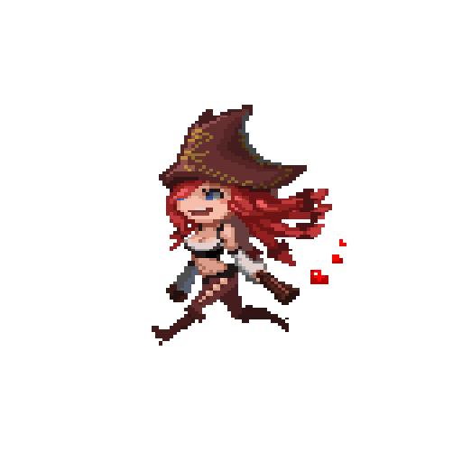
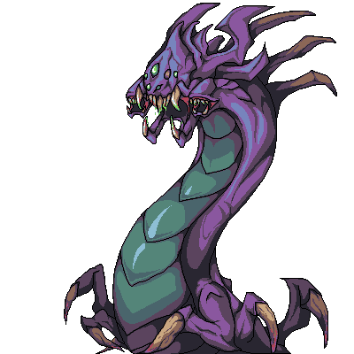
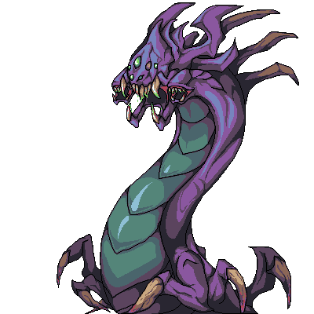

 


Primeros pasos en League of Legends
Muchos factores entran en juego para triunfar en los Campos de la Justicia. En la guía del nuevo jugador,aprenderás a controlar a tu campeón, conocerás las estructuras que te encontrarás en el campo de batalla y disfrutarás del tutorial. Cuando estés preparado, podrás incluso participar en tu primera partida competitiva de League of Legends.

A medida que avanza la partida, conseguiréis oro que podrás invertir en potentes objetos que mejoran las prestaciones de tus campeones en los Campos de la Justicia. Los objetos pueden ofrecer todo tipo de bonificaciones útiles, tales como un movimiento más veloz, Daño mejorado, una mayor resistencia, enfriamientos de habilidades reducidos, etcétera. Los objetos se pueden adquirir en la tienda, cerca de la plataforma de invocador en la que apareces al principio de la partida.

Campeones
League of Legends cuenta con un plantel de campeones en constante crecimiento, cada uno con un diseño y un estilo de juego únicos. Aquí podrás ver el plantel actual y conocer más detalles sobre los personajes que te interesen.
El plantel completo de campeones.

Hechizos de invocador
Los hechizos de invocador son poderosas habilidades que se pueden usar para apoyar al campeón en combate. Se pueden seleccionar los dos hechizos que se deseen para un combate cualquiera; a medida que se aumenta el nivel de invocador, se desbloquean más opciones. Estos hechizos permiten prender fuego a los enemigos, curar a los aliados, recolocarse rápidamente y mucho más, así que selecciónalos sabiamente.

© 2018-06-01. Todos los derechos reservados por la pagina a Esteban Mendoza y Matias Silva, Toda la marca de League of Legends es comercializable y registrada a Riot Games, Inc.